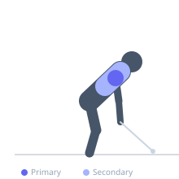

Exercise guide / Face Pull
Face Pull
The face pull is a cable pulling exercise targeting the rear deltoids, infraspinatus, teres minor, and middle trapezius. It trains the muscles responsible for shoulder external rotation and horizontal abduction, which are often underdeveloped relative to pressing muscles. Regular face pulls support shoulder health and posture.
Primary muscles
deltoid posterior
infraspinatus
teres minor
Secondary muscles
trapezius middle
rhomboid major
Stabilizers
trapezius lower
Equipment
Cable Machine (High Pulley)


Starting position
- Set a rope attachment on a high cable pulley at face height. Stand back far enough that the cable is taut at arm's length. Hold one end of the rope in each hand with a neutral grip.
Setup
- Use a rope attachment for maximum external rotation. Keep the elbows elevated — at or above shoulder height throughout the pull.
Steps
- With elbows elevated, pull the rope toward your face, separating your hands as you pull.
- Externally rotate the shoulders at the peak so your hands end up beside your ears or behind your head.
- Squeeze the rear delts and rotator cuff muscles hard at the peak contraction.
- Return the rope to the starting position with control.
Coaching cues
- Lead with your elbows — keep them up
- Think about putting your thumbs behind your ears at the peak
Breathing
- Exhale as you pull toward your face. Inhale on the return.
Range of motion
- Pull until hands are beside the ears with elbows flared and upper arms horizontal.
Tempo
- 2-1-2-0
Common mistakes
- Letting the elbows drop below shoulder height, shifting the movement toward a row
- Using excessive weight that compromises elbow position
- Not externally rotating at the end of the movement
Safety
- This exercise is typically used as a corrective and accessory movement — do not load it heavily
- Focus on quality of movement over load
Training
- hypertrophy: 12–20 reps
- endurance: 15–25 reps
- hypertrophy: 3–4 sets
- endurance: 2–3 sets
- Rest: {'hypertrophy': 60, 'endurance': 30}